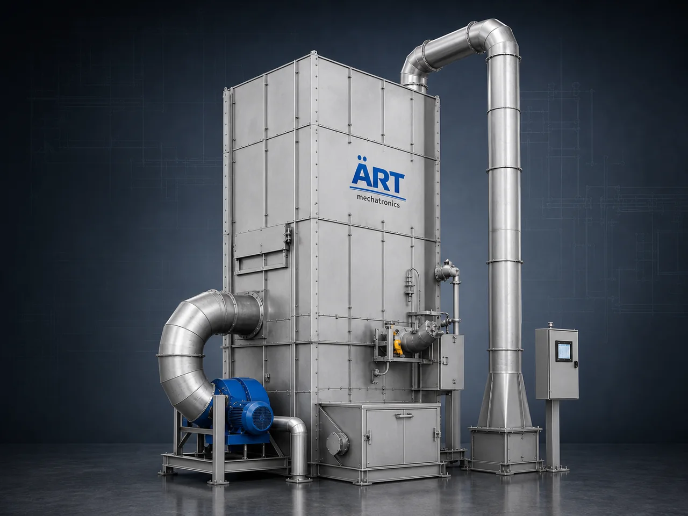

Industrial De-Dusting System Machine (Centralized Dust Extraction & Pollution Control Solution)
A De-Dusting System Machine is an advanced industrial dust control solution designed to capture, extract, and filter dust at multiple points across a plant, ensuring a clean, safe, and compliant working environment.

About the De-Dusting System
Unlike standalone dust collectors, a centralized de-dusting system connects multiple dust-generating points through a network of ducting and suction lines, making it ideal for large-scale manufacturing facilities.
De-dusting systems are widely used in industries such as pharma, food processing, spices, flour mills, chemicals, packaging, dairy powder, cement, and metal processing, where dust control is critical for product quality, hygiene, and regulatory compliance.
ART Mechatronics provides custom-engineered de-dusting systems designed for high efficiency, centralized operation, and long-term industrial performance.
One machine, many names
Buyers search for this equipment under many terms — we manufacture all of them:
Working Principle of De-Dusting System
Dust is generated from multiple operations such as:
Dust is captured at multiple locations using:
Prevents dust from spreading in plant
All dust-laden air is transported through:
Industrial Blowers / Fans create suction and move air.
Dust is separated using:
Ensures high filtration efficiency
Collected dust is discharged via:
Filtered air is released safely back into environment.
Types of De-Dusting Systems
Industries Using De-Dusting Systems
🍃 Food & Agro Industries
- Spices, flour mills, rice mills
- Pulses, coffee, tea, snacks
💊 Pharma & Powder Processing
- Tablet manufacturing
- Capsule filling
- Powder handling
🏭 Chemical & Industrial
- Chemicals, detergents
- Powder coating
🏗️ Construction & Minerals
- Cement plants
- Fly ash, gypsum
⚙️ Packaging & Material Handling
- Filling lines
- Conveyor systems
♻️ Recycling & Plastic
- Granules, pellets
- Plastic processing
Features & Advantages
- Centralized dust control across entire plant
- High-efficiency filtration (up to 99%)
- Improved product quality (especially pharma/food)
- Reduced maintenance and manpower
- Cleaner and safer working environment
- Compliance with pollution control norms
- Scalable and customizable design
Technical Highlights
- Airflow Capacity: Custom designed (CFM based)
- Filtration Type: Bag / Cartridge
- System Type: Centralized / Modular
- Dust Discharge: Rotary Valve / Hopper
- Construction: MS / SS
- Automation: PLC-based (optional)
Turnkey De-Dusting Solutions
ART Mechatronics provides:
- Complete system design & engineering
- Ducting layout optimization
- Equipment manufacturing
- Installation & commissioning
- After-sales service & AMC
Why Choose Art Mechatronics
- Expertise in multi-point dust control systems
- Customized plant-specific solutions
- High-efficiency and low-maintenance systems
- Proven performance across industries
- Strong after-sales support
Applications
- Food Processing Plants
- Pharma Manufacturing Units
- Chemical Plants
- Powder Handling Industries
- Packaging Lines
Industries that use the De-Dusting System
Get pricing & specs for the De-Dusting System
Share the product, target capacity, current process and plant location. These details help our engineers discuss the right machine or line configuration.
One partner, from design to start-up
ART Mechatronics designs, manufactures, installs and commissions your De-Dusting System solution with regional presence in India, UAE and Thailand.